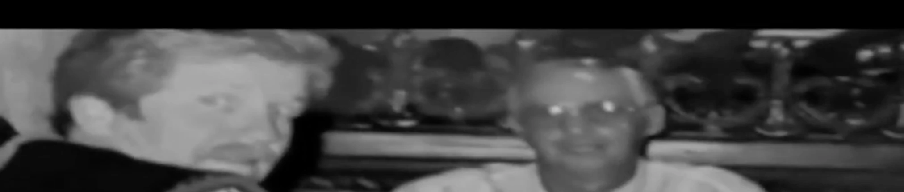
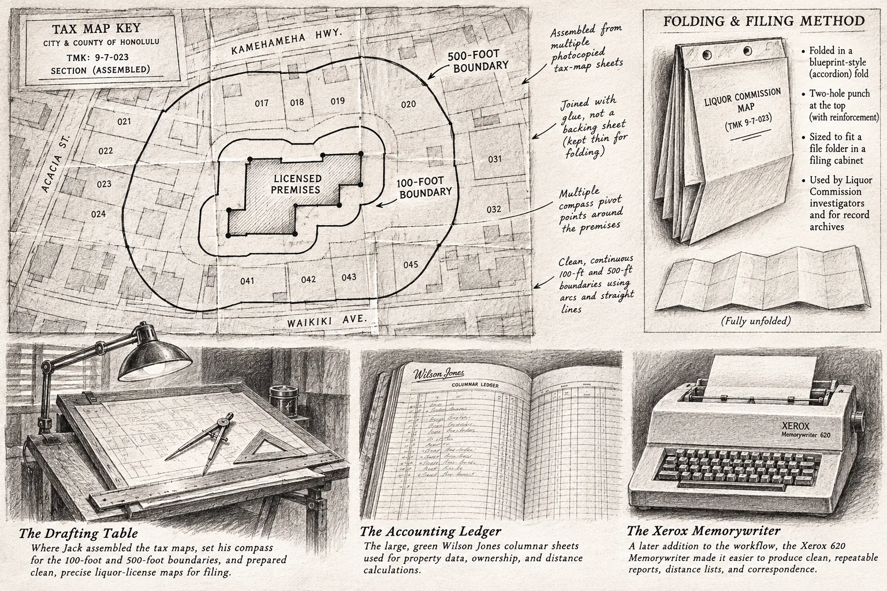
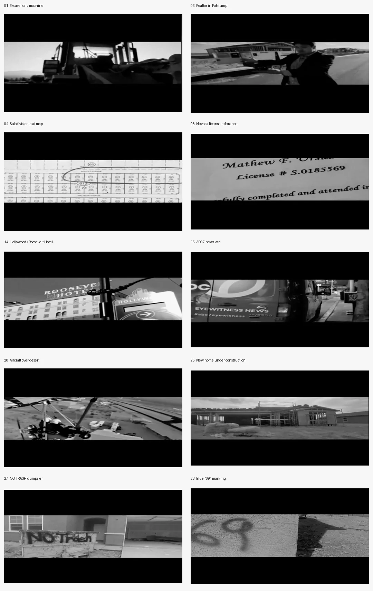

The Trophy on the Wall
My grandfather, John “Jack” Gayer, had a hole-in-one trophy hanging on the wall.
He was a golfer. He loved the game, and he was a meticulous man. He worked slowly and methodically, whether he was keeping his accounts or assembling the maps that were part of our family's business in Honolulu.
And he had a sense of humor about that trophy.
He explained the double meaning of hole in one to me. There was the achievement on the golf course, of course, but also the sexual innuendo—his joke about impregnating his wife, my grandmother, Donna, and his ideas about what a Republican man was supposed to accomplish.
He wanted me to be successful, too. He talked about getting what he called a trophy wife.
Those were his ideas, expressed in his own particular way. I remember them because I had enormous ambitions of my own.
I wanted to be wealthy. I wanted a beautiful wife and a family. I wanted to play golf, go to universities, own property, travel on airplanes, and meet extraordinary people.
Above all, I wanted the freedom to do those things.
My grandfather spent much of his working life making maps of other people's property. Years later, I would begin asking myself what it would take to own some of that property instead.

Gary Skelton, ZEE Medical, and the Business of Getting Bought
There was another man I remember from my grandfather's golfing circle. His name was Gary Skelton.
I remember Gary in connection with a marina-front property in Hawaiʻi Kai, with a boat alongside the waterfront. That image of business, golf, property ownership, and leisure represented a kind of economic freedom that fascinated me. I do not have the deed or photograph that would establish exactly which house was his. What I have is the memory of what that world looked like from my family's perspective.
I also remember him in connection with ZEE Medical, a business associated with first-aid products, safety supplies, training, and commercial customers.
Now here is the extraordinary number.
On August 1, 2015, Cintas acquired ZEE Medical from McKesson Corporation for acquisition-date consideration of $134 million—$120.6 million in cash and $13.4 million in contingent or holdback consideration, according to Cintas's filings with the Securities and Exchange Commission.
One hundred and thirty-four million dollars.
I like that number. I like what it suggests about building a real business: an operation with recurring customers, products, routes, people, know-how, and infrastructure that a larger corporation finds valuable enough to acquire.
Corporate records have also introduced an intriguing ambiguity into my recollection. A Better Business Bureau entry identifies a Gary Skelton as president of a ZEE Medical service company associated with California and Arizona. A separate Nevada BBB entry identifies Kenneth Skelton as president of a Las Vegas service company under the ZEE name. That name also appears in Nevada pharmacy licensing material from 2009. The national ZEE Medical corporate entity had other officers in the records surrounding its acquisition.
I cannot say that those men were related, or establish the exact ownership interest—if any—of the Gary my grandfather knew. Nor can I claim any particular portion of the sale price went to Hawaiʻi or to him.
But I don't have to solve every mystery to recognize what makes the story compelling.
A business existed. It grew valuable within a larger commercial system. Another business paid $134 million to acquire it.
What if I could build something worth buying?
What if I could build a research enterprise, a publishing platform, or a useful information system so capable and difficult to reproduce that a larger organization would want to acquire it? Or so profitable that I would prefer to keep it?
My grandfather's world of tax maps and golf friends gave me a glimpse of business and property. ZEE Medical offers a documented example of a company changing hands for an extraordinary sum. That is enough to provoke an ambition.
The Drafting Table
We lived in Foster Village, across from Admiral Arthur W. Radford High School, where I attended school and where, as I remember, my grandparents had gone before me.
My grandfather had trained at Honolulu Community College in sheet-metal work. His brother had trained in electrical work. Those practical trades required careful measurements and the ability to work from technical drawings. Jack brought the same methodical habits into the family business.
In his home office was a large drafting table.
He obtained tax maps from the City and County of Honolulu, took them to Hawaii Blueprint on Cooke Street, and had them enlarged or reduced to the scale required for our work. Then he pasted them together.
I remember Elmer's glue. Ordinary glue, the sort of thing a child might use in elementary school. There were rulers and compasses and maps showing the boundaries of parcels of land.
We assembled map-and-list packages for liquor-license applications. We needed to know which parcels surrounded a proposed location, which owners appeared in the tax records, and how the geography and documentary evidence fit together.
He did it by hand.
Long after computers entered everyday office work, he continued keeping accounts on enormous green ruled ledger sheets. My grandmother managed much of the filing and the building-permit records. There were cabinets full of paperwork, and a Xerox Memorywriter in the living room.
I remember the Walter Murray Gibson Building in downtown Honolulu in our family's earlier property-work history. I remember trips to Fisher Hawaii, near the blueprint shop on Cooke Street, for office supplies.
These were the working places of my childhood.
Sometimes I think about them when I am querying computerized parcel records and geographical information systems today. My grandfather used paper maps, a compass, and glue. I use databases, spreadsheets, digital maps, and public REST APIs.
The technology changed. The underlying questions didn't.
Who owns the land? Where are the boundaries? What do the records say?


The Ruby-Red Saturn Aura
My grandfather eventually reached the point where he could no longer drive.
He had a 2008 Saturn Aura, a beautiful ruby-red sedan with off-white leather seats, power adjustments, and a handsome interior. I loved that car.
It was not a Ferrari.
But there is something about the Ferrari in Magnum, P.I. that I understand. Thomas Magnum drove around Oʻahu in a red sports car, solving mysteries and living an extraordinary life. Much later, CBS brought the character back, with Jay Hernandez playing Magnum and driving a newer Ferrari.
I had already spent my own years driving around Honolulu in my grandfather's Saturn before that reboot arrived. I had my cameras, my scanner, and a city full of things happening.
The fires were real. The ambulances were real. The accidents and emergencies were real. I was trying to photograph them before the press releases arrived.
The family business was struggling during those years, and the home faced foreclosure. I believe the family spent something approaching $100,000 on my education, and I have long wondered whether I could have become independent sooner under different circumstances.
There was no grand ceremony when the Saturn became the car I used. It simply happened. My grandfather could no longer drive it, and I could.
The automobile became one of my most important instruments of independence.
I remember nighttime stops at the 7-Eleven on Bougainville Drive near the Navy Exchange. I remember the ivory-colored passenger seat and Toblerone chocolate. Years later, buying another Toblerone in Los Angeles brought the old automobile back into my imagination.
The Keyboard and the Camera
I came from a family that made a living working with information.
My grandfather had his drafting table. My grandmother had her filing cabinets and the Xerox Memorywriter. They prepared maps, lists, and documentation for applications and property-related work in Honolulu.
Years later, I found a way of making money through another kind of documentation.
I became a computer-assisted notetaker for students who were deaf or hard of hearing. I was a fast typist. I loved keyboards.
I used a Happy Hacking Keyboard, and I would sit through college lectures and technical classes, typing so another student could access what was being taught. Sometimes I worked in automotive classrooms, moving from lectures into the shop, where a transmission might be opened up for examination.
I remember earning thirty-five dollars an hour. Sometimes, for demanding assignments, forty.
It was good money.
But I didn't use it to build the conventional social life I watched other students enjoying. I didn't use it to take women on dates. I didn't establish the friendships and relationships I wanted.
I bought cameras. I bought lenses. I bought computers and the equipment necessary to become an independent photographer.
I bought from KEH and invested in Eye-Fi cards, laptop computers, camera bodies, and lenses that could help me get photographs into the news.
I financed my venture myself.
I could hear an emergency call, get into the Saturn, drive to the incident, find somewhere to park, and get myself and my camera to the scene.
I remember chasing fire engines down Dillingham Boulevard, listening to dispatch traffic near the airport, and trying to make a photograph before an established newsroom photographer arrived.
I was often doing this while weighing around 400 pounds. I was struggling with my health and psychiatric treatment in ways that I understand differently today. But I kept going.
When one of my photographs was published, the recognition meant an enormous amount to me.
I didn't have a newsroom salary behind me. I had the income I earned taking notes in college classrooms, the equipment that income purchased, and my grandfather's ruby-red Saturn Aura.
H A C K I N G
K E Y B O A R D◉≋
≋
≋SD
The Little Red Light
My grandparents were early cellular telephone customers. I remember VoiceStream, before the service became T-Mobile. I remember the Nokia phones, when entering a text message meant pressing a tiny button again and again until the correct letter appeared.
And then came the BlackBerrys. The Pearl. The Javelin. The little trackball and, later, the smooth optical trackpad.
I loved them.
I configured BlackBerry Enterprise Server for the family business so my grandmother and I could communicate and handle email while working away from the office. I admired the professional world those devices seemed to represent: executives, lawyers, and reporters.
I watched programs about journalism itself, including Reliable Sources, and I wanted to belong to that culture.
There was a little red light on the BlackBerry that could make me feel that I was beginning to.
It blinked when a message arrived. I could be standing in downtown Honolulu, photographing a press conference, and see it flashing. Another email. Another press release. Another development in government.
I followed the city's mayoral administrations—Mufi Hannemann, Peter Carlisle, Kirk Caldwell—and tried to understand the public institutions I wanted to document.
In Once I Was a Reporter, my 2016 memoir, I remember standing near Alapaʻi Transit Center, receiving an email about a news-editor position at Ka Leo O Hawaiʻi, and imagining myself directing a newsroom.
That little red light seemed so small, and its meaning to me was so large.
“That little red light seemed so small, and its meaning to me was so large.”
The Airplane I Was Afraid I'd Never Board Again
When I was a child, I was afraid I might never get on an airplane again.
I had seen enough poverty in Hawaiʻi to understand that some people lived their entire lives without the money to leave the islands. I didn't want that future.
When I was taken to Disneyland, I remember wanting to see Trump Tower instead. I was fascinated by wealth, buildings, professional institutions, and the freedom that money could make possible.
In the fourth grade, I made myself a little first-class airplane cabin in my bedroom. Folding chairs. Pillows. A television. I could imagine the journey even if I couldn't be sure I would ever afford it again.
Years later, I enrolled in journalism coursework at Honolulu Community College. Michael Leidemann became my mentor.
I remember him handing me a reporter's notebook and sending me to cover a meeting. Take notes. Collect the quotations. Come back with a story.
An ordinary classroom assignment became work for the student newspaper, Ka Lā. I worked with editors and student journalists, including Ieva Bytautaite, whose beauty and ambition made an impression on me.
And I remember Chicago.
In 2012, I traveled with Michael, Ieva, and Delia to an Associated Collegiate Press convention. We attended seminars and spent days among people who wanted to write, photograph, edit, and report the news.
There was a brief exchange near a hotel elevator when a young woman asked whether I was with Ieva. I cannot know exactly what she meant, but the moment stayed with me. I have wondered whether I should have respectfully asked Ieva out instead of assuming I had no chance. I don't know what she would have said.
But I know something else.
The boy who feared he would never leave Hawaiʻi had made it to Chicago. Journalism had taken him there.
The following year, there was New Orleans. Our student newspaper went on to win national recognition. And at the University of Hawaiʻi at Mānoa I worked with Ka Leo O Hawaiʻi, eventually serving as a photo editor.
It was the extraordinary period I described in Once I Was a Reporter as my year among giants.
For a little while, airplanes had become part of my life.
Pahrump Is Paradise
My Uncle Jerry—the man standing beside my grandfather in the family photograph—eventually lived in Pahrump, Nevada, after years in San Diego. I spent a little time staying with him there.
Around 2018 and 2019, I pursued an opportunity in Nevada real estate. I had grown up around property records and real-estate professionals. Now I wanted to make a place for myself in that industry.
Pahrump seemed to offer possibilities: land, new homes, growing subdivisions, and the chance to help people start a new chapter of their lives.
But my experience in Nevada became more difficult than I had imagined. I was charged with a crime, and the proceedings became a turning point. I have written extensively in Comeback of the Century about those events and my objections to psychiatric evaluations and legal judgments made during the case. The documentary detail belongs in that book and in more specialized writing.
Here, I want to remember the Pahrump I was trying to leave.
In April 2022 I quietly published a film on YouTube: Sheer Luck, One in a Million Chance | “I Have a Dream.”
The video takes us through new construction, desert roads, flying machines, and Los Angeles media landmarks. In the soundtrack, I talk about Hawaiʻi: its maritime and aviation history, its geography, and the difficulty of leaving an island without financial resources.
There is a Caterpillar excavator at a construction site. The name invites a literary interpretation: an excavating machine that makes room for houses and a caterpillar that may become something different. A practical scene and a possible metaphor for transformation.
There is a dumpster marked NO TRASH, and a painted 69 on a worksite surface. These marks may be entirely ordinary construction notations. Placed within the film, they can also become found words that invite interpretation. Their exact intended meaning is unknown.
And there is an ABC7 Eyewitness News vehicle in Hollywood. I had spent years wanting to belong to the institutions represented by those news trucks. Now I was filming one from outside that world.
Near the end, I speak about family, love, and the color of people's skin: not merely because nondiscrimination laws require fair treatment, but because that is the kind of person I want to be.
The film became a kind of goodbye, and another attempt to imagine a life beyond the circumstances I was leaving.
Sheer Luck, One in a Million Chance
“I Have a Dream”
Original YouTube video by Mathew Ursua. Click to load the player; no autoplay.

The Body I Had to Carry
There is another part of this story that I cannot separate from the car, the cameras, or the career I was trying to build: my body.
During my college years, my weight reached approximately 417 pounds. I spent much of my young adulthood receiving psychiatric treatment, and I now believe the medications I was prescribed contributed profoundly to my weight gain, fatigue, and difficulties with motivation and social development.
My 2016 memoir, Once I Was a Reporter, was written from a very different perspective. My 2025 memoir, Comeback of the Century, questions that earlier treatment more forcefully. My interpretation of the causes in my own life is not the same thing as a definitive clinical conclusion, but it is part of my account.
After the criminal charges in Nevada, while out on bail and awaiting trial, I underwent a dramatic physical transformation.
I climbed the Koko Head stairs. I exercised at Planet Fitness. I walked. I trained. I lost more than 214 pounds, by my account.
During later detention, I developed what I describe in my memoir as an inguinal hernia while exercising. The injury complicated my ability to train. Recovery has continued to demand work.
In November 2026, I filmed a short video aboard a Los Angeles Metro train. My arm was raised to the handrail and I flexed the muscles in my upper arm and shoulder. It was only fourteen seconds long.
A train. A handrail. A few seconds of video. A reminder to myself that I was still trying to become stronger.
LOS ANGELES · NOVEMBER 2026
The next chapter of physical recovery
Fourteen seconds aboard a train. A present-day self-portrait—not a medical test or a claim of completed recovery.
Who Owns the Information?
There is another side to corporate consolidation, and I have written about it extensively.
In December 2025 I submitted testimony to the Honolulu City Council regarding Bill 46 and public access to police communications. I had spent years pursuing emergency-response photography. I knew what it meant to hear a dispatch, get into my car, and photograph an incident.
I was concerned that government and established corporate media could create privileged channels of access while independent photographers and smaller news organizations remained outside.
I wanted direct public access to information, machine-readable data, and meaningful opportunities for independent verification.
There is a paradox here. I admire the capacity to build a business valuable enough to acquire. But I believe public information should not be restricted to organizations with the deepest pockets.
The acquisition of ZEE Medical is a question of commercial consolidation. A possible exclusive information channel for news organizations is a question of public access and accountability. They are not the same phenomenon, but both make me ask: Who controls the system? And who gets to participate?
The Hawaiʻi Rich Family Guide
This brings me to a project I am developing: the Hawaiʻi Rich Family Guide.
In the simplest terms, it is about understanding who owns Hawaiʻi—not merely who appears rich, but who owns property, how ownership is organized, and what public records can tell us about concentrations of assets among people, businesses, and trusts.
It grows out of my family's history. I remember my grandfather's drafting table, the maps, the ledger sheets, the tax offices, Hawaii Blueprint, and Fisher Hawaii.
Today Honolulu provides public cadastral data through ArcGIS REST interfaces. Those datasets include parcel identifiers, ownership fields, and tax-billing mailing information that can be queried electronically. I have been collecting and examining records, including owner-name and mailing-address tables, as part of an effort to turn those records into accessible research and published analysis.
A name appearing across parcels is not proof of ultimate beneficial ownership. A condominium assessment is not equivalent to a single detached house. A family trust, a corporation, and an individual owner are different things. The Guide should make these distinctions, not hide them.
The goal is to document patterns of ownership, examine wealth concentration, and make the research more understandable to the public.
Hawaiʻi and California: Two Different Information Environments
California has approximately 12.87 million land parcels. It has statewide public mapping resources, including parcel geometry, parcel identifiers, and site addresses. But the public statewide REST layer I examined does not expose the same combination of owner names and tax-billing mailing addresses that Honolulu provides in its cadastral tables.
Those ownership fields may be available through other public records or commercial products. The issue is the practical difference in access: can an independent journalist or student query ownership patterns without first purchasing an expensive licensed dataset?
I explored that question in my essay New Frontiers in Social Justice. The existence of information is not the same as the opportunity to use it.
These figures describe different record universes. Parcels are not distinct owners.
Building Something That Lasts
There are strands running through my life that I keep returning to: my grandfather assembling property maps; Gary Skelton and my memories of the Hawaiʻi Kai waterfront; ZEE Medical becoming part of Cintas in a $134 million acquisition; the newspaper office; the cameras; the Saturn Aura; and now the Hawaiʻi Rich Family Guide.
They lead to a single question.
What can I build that will continue producing value after I have finished the day's work?
A business can produce income. A rental property can generate net operating income after its costs. A database might become a useful product. A publication can build an audience and remain part of the documentary record.
None is effortless. None is guaranteed.
I once earned thirty-five dollars an hour taking notes in college classrooms. That income funded my cameras. I remain proud of that work. But now I want to own income-producing property, continue studying, create independent photography and writing, and build research and publishing systems that might become commercially valuable—or worth keeping for the income and freedom they provide.
My grandfather's world was full of maps of other people's property. I want to learn how to own some of the property, too—and make information about ownership more accessible to everyone.
I want to travel. I want to study. I want a home and a family. I want to create work worth reading and photographs worth remembering.
I cannot recover every year that has passed. But I can still build something.
My grandfather had his drafting table, his hole-in-one trophy, and his car. His acquaintances gave me glimpses of what business and ownership might make possible. I had the keyboard, the cameras, and the blinking BlackBerry.
I still want to get on that airplane.
And I still want to see where it can take me.
Help build the next chapter.
Financial support, voluntary property contributions, documentary work, education, and property-research enterprises.
Ways to contribute ↗